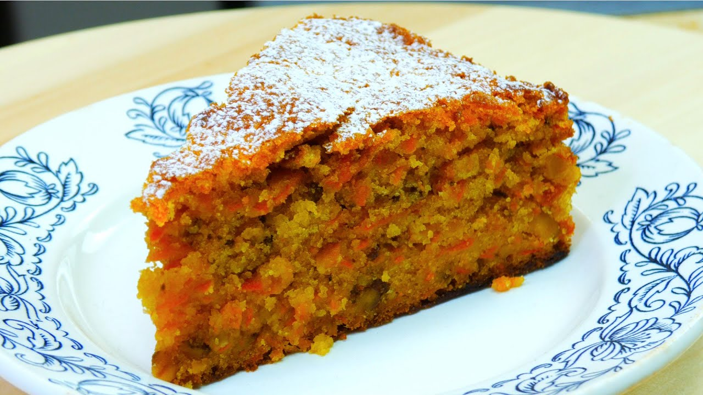

приготовление:
-
Поставить разогреваться духовку на 165 °C. Замочить совсем ненадолго в киипятке 100 г изюма и выложить подсушиться на бумажное полотенце
-
В большой миске просеять 250 г самоподнимающейся муки и 2 ч. л. разрыхлителя. Добавить 100 г коричневого сахара, изюм и 200 г тертой моркови. Натереть цедру 1 апельсина и добавить к смеси. Положить 1 ч. л. корицы с горкой, немного молотого мускатного ореха и при желании щепотку кардамона. Перемешать, чтобы равномерно распределить специи и сухие ингредиенты.
-
В отдельной миске смешать 150 мл растительного масла и 2 слегка взбитых яйца. Влить жидкую смесь к сухим ингредиентам и аккуратно перемешать миксером на низкой скорости до однородности.
-
Переложить тесто в форму,застеленную бумагой/смазанную маслом. Разровнять поверхность. Выпекать в разогретой духовке 1 – 1+15мин часа, до сухой шпажки. Дать постоять в форме 10 минут, затем переложить на решётку и полностью остудить.
-
P.S. можно кусочками заморозить и он прекрасно за минуту в микроволновке готов к употреблению